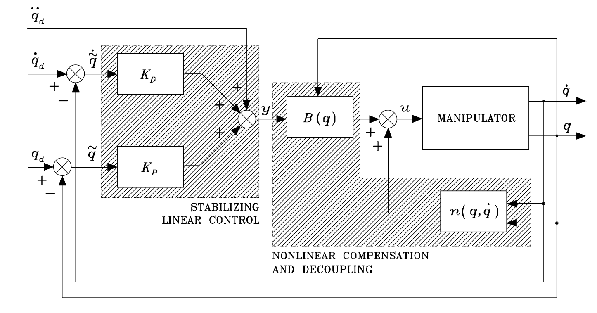

This robotic arm was made for a group project for the course MAE C263C: Controls of Robotic Systems.
We were given a robotics kit that included several high-end DYNAMIXEL stepper motors and were tasked with creating
a system to demonstrate our understanding of controls as taught in the course. My group opted to create the 2R planar arm playing
a game similar to air hockey or Pong shown here and in the video below.
I was largely responsible for programming the robot's behavior with Python and implementing its vision processing with OpenCV.
The video below shows the camera's view with key variables overlaid on the left as well as another view recorded seperately on the right.
The graphics on the left include markers for the tracked ball position, predicted ball path, the end effector's desired position (yellow),
and the end effector's actual position, calculated from encoders (red).
In the video, several different control algorithms and gains are shown. Since the project was for a controls class,
we showed how the robot operates differently under different gains. As one would expect, increasing the proportional gain
resulted in oscillations around the target position, while increasing the derivative gain caused stiffness.
We can also see some other performance issues related to hardware and implementation. The robot sometimes fails, even in positions
where it should be able to reach and hit the ball in the right direction. This can be attributed to a fairly simple implementation
for trajectory planning, which appears to especially struggle in scenarios where the ball is close
to the end effector and primarily moving vertically.
Additionally, the camera we used was chosen for its low-cost, but it suffered from a delay which can be seen
in the lag between the position of the end effector on the camera view and the red circle. The position of the red circle is calculated
given the stepper motors' angular position measured by encoders, forward kinematics, and a frame conversion from meters to pixels. Whenever the arm makes
a rapid motion, we can see this lag clearly, suggesting the camera's view is notably delayed after the encoder angle readings. This limitation
prevented adding complexity to the trajectory planning, since the tracked ball state will always have some lag.
The materials used to build the
arena also had some issues, as we could not assume perfectly inelastic collisions with the wall, or rely on the arena surface to provide
frictionless, slipless motion. This can be seen throughout the video and especially when the ball gets stuck in the middle of the arena,
despite a slight tilt allowing gravity to usually bring the ball back to towards the arm. This created unpredictable motion that also put
contstraints on the complexity of trajectory planning.

Several control algorithms were implemented for the arm, all derived from the inverse control dynamics loop
shown here from the course textbook, Robotics: Modeling, Planning, and Control by Siciliano, et. al.
Simplfied inverse dynamics with average inertia ignores Christoffel terms (Coriolis and centrifugal forces, n in the diagram) and treats the
inertial matrix B as a constant with respect to configuration, which is fairly appropriate for a planar arm.
This allows us to calculate one matrix for all control steps, reducing computations per step.
Inertial inverse dynamics does calculate the inertial matrix for the given configuration,
adding complexity by requiring the inertia be calculated every step.
Full inverse dynamics is just the entire loop as shown, with configuration-dependent inertia and Christoffel terms.
From our testing, the simplest implementation of this control loop, with just a constant inertia matrix, was suitable enough for our purposes.
The GitHub for this project is available
here.
Thank you to my group members for their work on this project.